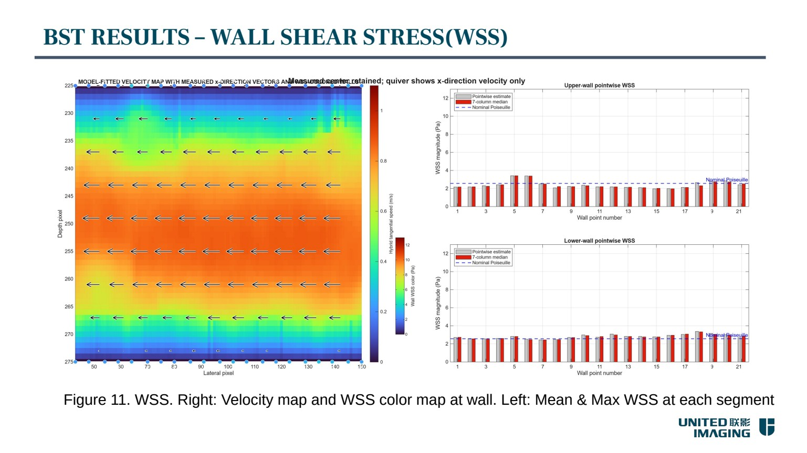
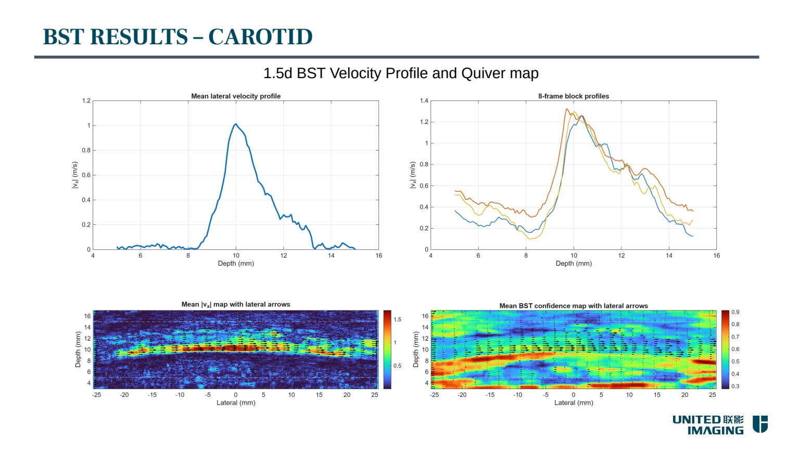

Quantitative vector-flow imaging
An independent research program connecting high-frame-rate acquisition, blood-speckle tracking, velocity-field reconstruction, and wall-shear-stress estimation. In controlled-flow experiments, refining the tracking and filtering pipeline improved near-wall velocity estimation and enabled reconstruction of near-wall gradients and a preliminary wall-shear-stress map. Pilot carotid analysis then demonstrated spatially resolved velocity profiles and flow-direction maps, establishing a path toward longer pulsatile acquisitions and reference-method validation.


Selected research figures shown with permission. Proprietary code, platform details, and raw data are omitted.